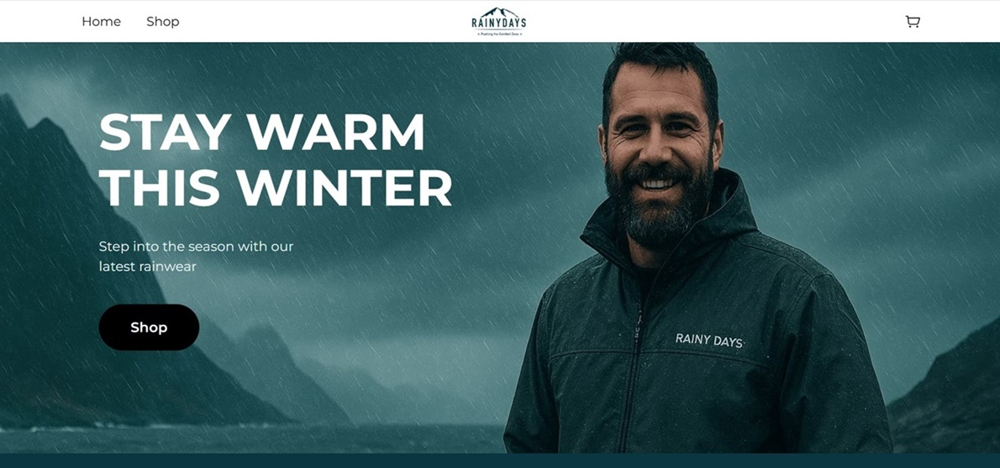
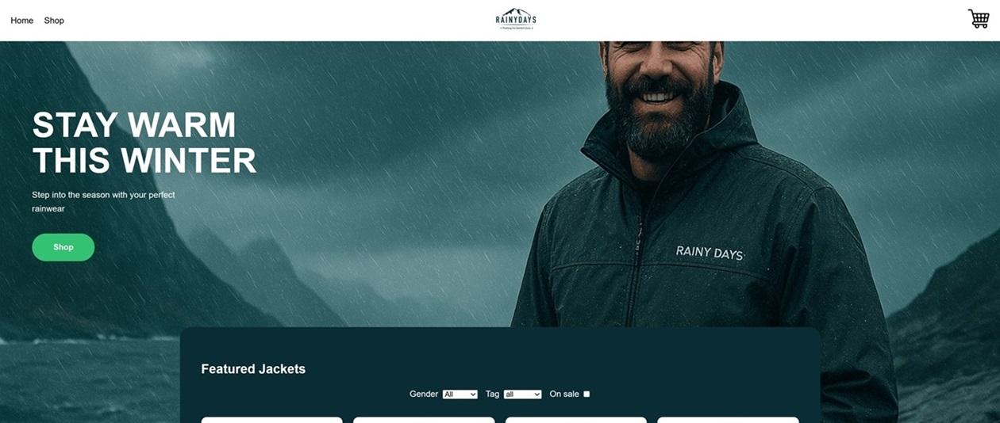
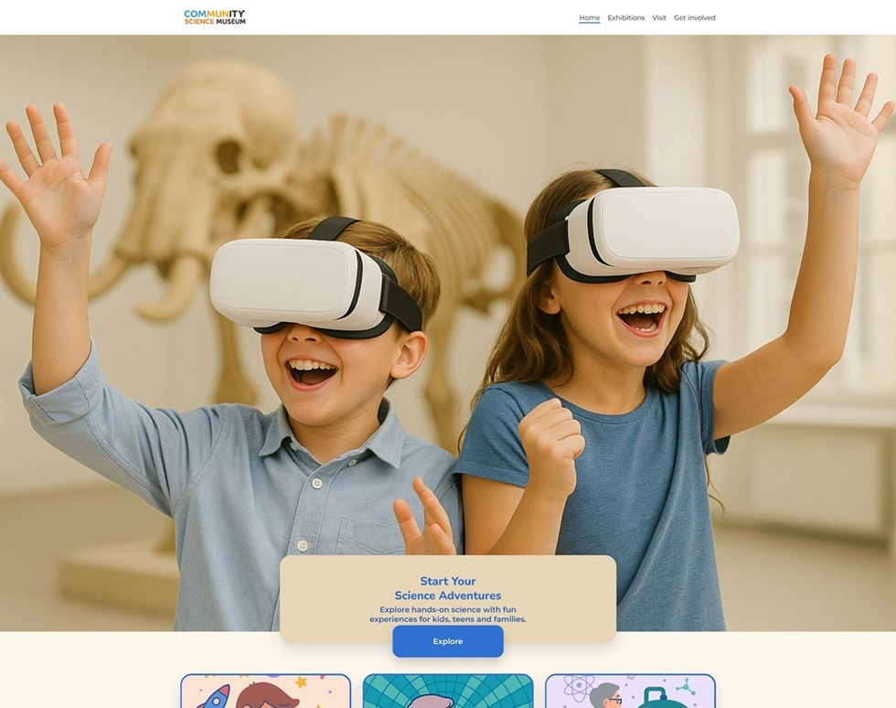

Rainy Days - HTML & CSS
An outdoor jacket store built with HTML and CSS, focusing on responsive design and user experience.
Frontend Development Student
Welcome to my portfolio. Here you can explore projects from my first year studying frontend development at Noroff.
A selection of projects completed during my first year studying Frontend Development at Noroff.

An outdoor jacket store built with HTML and CSS, focusing on responsive design and user experience.

An outdoor jacket store built with JavaScript, focusing on interactive features and dynamic content.

A interactive website for the Community Science Museum, showcasing exhibits and events.